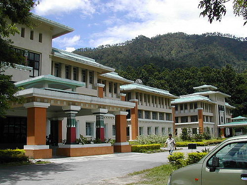

Overview
Sikkim Manipal Institute of Technology
|

|
The first view of Sikkim Manipal Institute of Technology (SMIT) is awe inspiring and more than enough to motivate any one to be a part of this beautiful, resort like campus nestling on the banks of River Teesta in the verdant hills of East Sikkim. The institute is a constituent college of Sikkim Manipal University located in Tadong, Gangtok. Established in 1997, SMIT is part of the renowned Manipal Group that has made its mark in the field of education and health services in India and abroad. SMIT enjoys approval by All India Council of Technical Education (AICTE) and University Grants Commission (UGC). It is also accredited by NBA. In addition, it also holds ISO 9001 accreditation vide NS-EN ISO 9001:2000.
The academic standard of SMIT is at par with the best institutes in the country. A highly qualified and dedicated faculty ensure that the students are provided with a holistic education that makes them job ready, industry ready and life ready.
|
|
Training and Placement Cell is to guide students to choose right career and to give knowledge, skill, and aptitude and meet the manpower requirements of the Industry. The industry is always on the lookout for students who are vibrant, energetic individuals and ready to accept challenges, attentive, a good academic background, fast learners, open to learning even at work and more importantly, good communication skills.
|
|
Placements
SMIT enjoys a strong student placement record. SMIT students have been placed in well-known national and international organizations such as, Microsoft, FL Smidth, TCS, Infosys, Wells Fargo, Cognizant, ANZ, Wipro, HCL, Tech Mahindra, Accenture, Satyam, Microland, NIIT, Tata Motors, Tractor India Ltd., Hindustan Motors, Skytech, Ushacom, Pricewaterhouse Coopers, Tata Elxsi, Hutch, ANZ, IDBI,HDFC (Mutual funds), Convergys, Times of India and many other reputed and prestigious organizations. SMIT is poised to attain even greater heights in times to come. The untiring effort of each and every member of the staff and the students to achieve that greatness in life will definitely see SMIT growing and moving from one milestone to the next with glory and success.